IB Docs (2) Team
IB Docs (2) Team

Unit 3.2(2): Variations in economic activity - aggregate supply(AS)
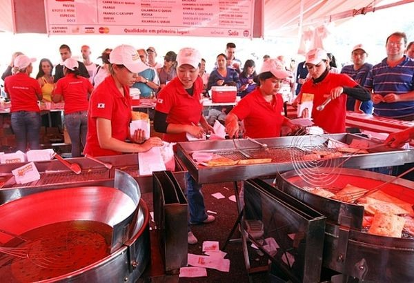
Aggregate supply is the total quantity of all goods and services the economy can produce at a given price level and in a given time period. At a microeconomic level, we consider the supply of a particular good in a market produced by all the firms in that market. Aggregate supply adds together the supply of goods from all the markets in the economy.
- Defining aggregate supply
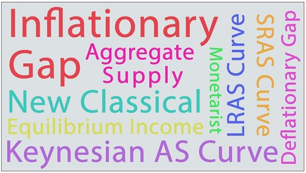
- Short-run aggregate supply (SRAS) curve
- Determinants of short-run aggregate supply
- Changes in short-run aggregate supply
- Short-run equilibrium national income
- Monetarist/new classical view of the long-run aggregate supply curve (LRAS) curve
- Long-run equilibrium at full employment level of output
- Inflationary and deflationary/recessionary gaps
- Keynesian view of the aggregate supply curve
- Equilibrium in the Keynesian model
- Changes in aggregate supply over the long run
Revision material
 The link to the attached pdf is revision material from Unit 3.2(2) Variations in economic activity - aggregate supply(AS). The revision material can be downloaded as a student handout.
The link to the attached pdf is revision material from Unit 3.2(2) Variations in economic activity - aggregate supply(AS). The revision material can be downloaded as a student handout.
Definition of aggregate supply
Aggregate supply is the total quantity of all goods and services the economy can produce at a given price level and in a given time period. At a microeconomic level, we consider the supply of a particular good in a market produced by all the firms in that market. Aggregate supply adds together the supply of goods from all the markets in the economy. Aggregate supply is made up of the output of all the different types of producers in the economy from small and medium-sized enterprises (SMEs) up to multinational corporations (MNCs) and state-run industries.
Brazil has over 6 million small and medium-sized enterprises (SMEs) spread across the primary, secondary and tertiary sectors of the economy. In Brazil, SMEs are any business that has a revenue of below $38 million. They are an important part of aggregate supply in Brazil, accounting for 20 per cent of GDP and over 50 per cent of employment. Brazil’s SMEs are made up of businesses across a variety of different markets such as restaurants, theatres, private healthcare, web-based services and hairdressers, etc.
SMEs have given a significant opportunity for women in the Brazilian economy with 52 per cent of SMEs being owned and managed by female entrepreneurs. Information technology dominates much of the growth in SMEs with nearly 30 per cent of the 250 fastest-growing Brazilian SMEs focused on information technology and communications.
Questions
a. Define the term aggregate supply. [2]
Aggregate supply is the total quantity of all goods and services the economy can produce at a given price level and in a given time period.
b. Outline the difference between the primary, secondary and tertiary sectors that make up the supply side of the economy. [4]
The difference between the three different sections are:
- Primary sector involves mining, agriculture and fishing
- Secondary sector is manufacturing goods
- Tertiary sector is the provision of services.
c. Explain the importance of SMEs in Brazil’s aggregate supply. [4]
SMEs in Brazil account for 20% of its GDP and over 50% of its employment. This means SMEs have a significant influence on Brazil's total output and aggregate supply.
Investigation
Research into the importance of SMEs in another economy to examine their importance to that country’s aggregate supply.
Short Run Aggregate Supply (SRAS)
Definition of the short run
The short-run in this model is the time period when the price level in the economy can change but the cost of factors of production is held constant.
The short-run aggregate supply curve
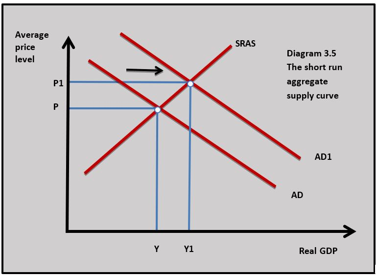
There is a positive relationship between the average price level and the short-run aggregate supply curve. As the average price level rises firms will increase output to take advantage of higher profits from a higher price level and a higher price covers the cost of increasing output. Diagram 3.5 shows how an increase in the average price level from P to P1 leads to a movement along the short-run aggregate supply curve and real output increases from Y to Y1.
Changes in the short-run aggregate supply
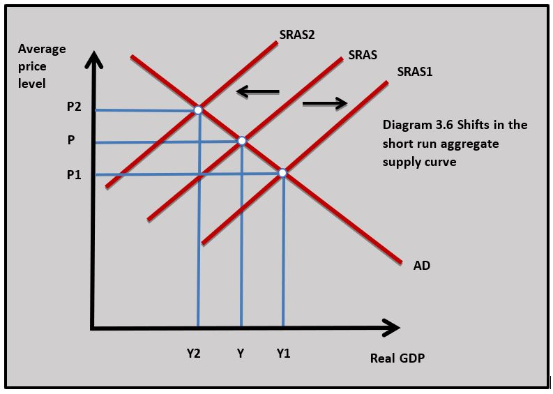
The short-run aggregate supply curve will shift if there is a change in business costs brought about by a change in the price of resources. If wage rates or the cost of raw materials fall then the short-run aggregate supply curve will shift to the right from SRAS to SRAS1 in diagram 3.6. If wage rates rise or the cost of raw materials rises, then the short-run aggregate curve will shift to the left from SRAS to SRAS2 in diagram 3.6.Changes in indirect taxation can also cause shifts in the short-run aggregate supply. If a country increases its rate of VAT from 20 per cent to 25 per cent then aggregate supply will fall and the short-run aggregate supply curve will shift to the left.
Oil prices have plummeted in recent weeks as a result of falling demand because of the Covid19 crisis and a decision by the world’s biggest suppliers, Russia and Saudi Arabia, to increase output. On one day in April, the price of US crude oil crashed from $18 a barrel to -$38. Oil is currently trading at $30 a barrel down from $70 earlier in the year.
Falling oil prices can have a significant impact on business costs in terms of energy and transport expenses. With oil prices currently 50 per cent below their level earlier in the year and business costs falling, the short-run aggregate supply curves of economies across the world will be increasing and shifting to the right.
Questions
a. Using a diagram explain why there is a positive relationship between short-run aggregate supply and the average price level of the economy. [4]
 As the average price level rises firms will increase output to take advantage of higher profits from a higher price level and a higher price covers the cost of increasing output.
As the average price level rises firms will increase output to take advantage of higher profits from a higher price level and a higher price covers the cost of increasing output.
b. Using a diagram explain the impact falling oil prices would have on real GDP and the average price level of an economy that consumes a large amount of oil. [4]
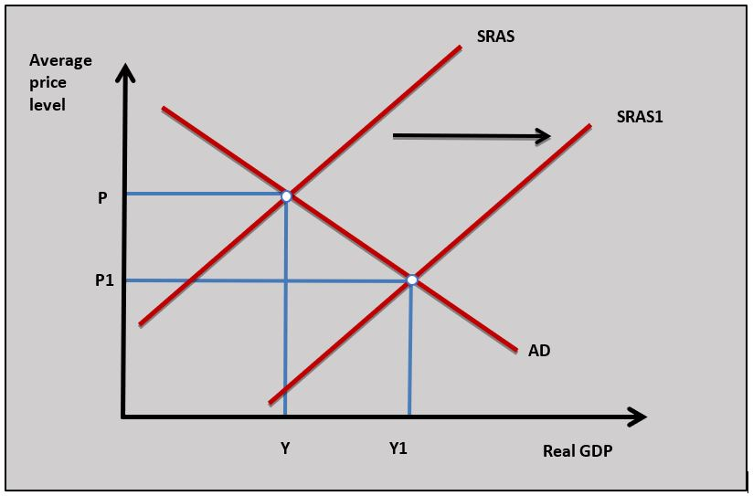
As the price of oil decreases, it becomes less expensive to businesses that use oil in their production processes such as energy firms and manufacturers that use plastics. This cause the SRAS curve to shift from SRAS to SRAS1 as production costs fall in the economy and this leads to an increase in real GDP and a decrease in the average price level.Investigation
Research other factors that might affect short-run aggregate supply in an economy.
Short-run equilibrium national income
The short-run equilibrium national income is the real GDP of a country determined by the interaction of short-run aggregate supply and aggregate demand. When aggregate demand equals short-run aggregate supply the economy achieves the equilibrium national income (real GDP) and the equilibrium average price level.
Changes in short-run equilibrium
A change in either aggregate demand or supply will cause a change in the equilibrium level of national income (real GDP).
Change in aggregate demand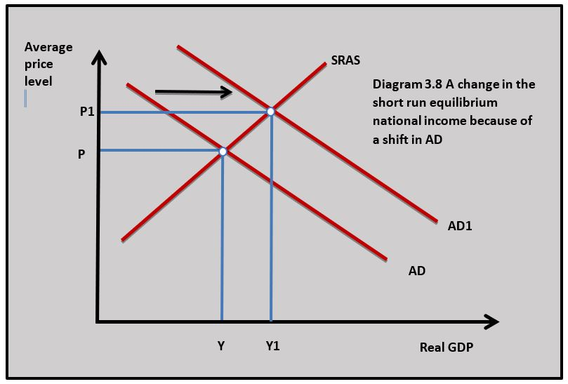
For example, a reduction in income tax on households leads to a rise in their disposable income. This leads to an increase in consumption and a rise in aggregate demand. The aggregate demand curve shifts from AD to AD1 in diagram 3.8 leading to a rise in the average price level from P to P1 and an increase in real GDP from Y to Y1.
Change in short-run aggregate supply
For example, short-run a 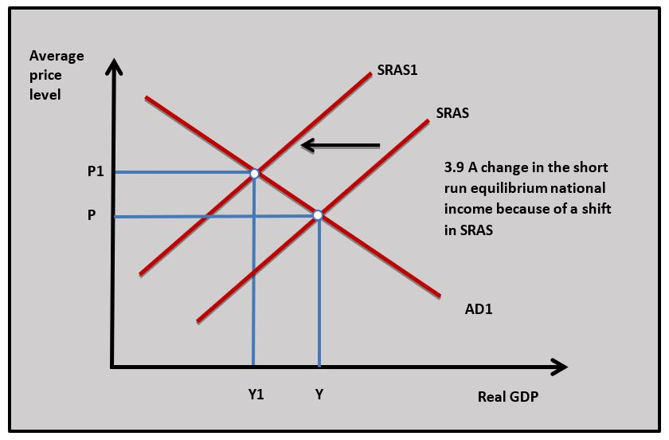
There has also been a supply-side shock to economies across the world as governments have enforced ‘lockdowns’ that have led to many businesses significantly reducing their output or some stopping production altogether. There is little doubt that the short-run equilibrium incomes of nearly every economy will contract at the same time leading to a global recession. The question is: how long will it take economies to recover?
Questions
a. Define the term aggregate demand. [2]
Aggregate demand is total expenditure in an economy at a given price level and at a given point in time.
b. Using a diagram explain the impact falling consumer confidence has on an economy. [4]
 A fall in consumer confidence means household expectations of their future economic prospects declining. This means they are less willing to buy goods and services in the future and consumer expenditure will fall. The fall in consumption spending leads to a fall in aggregate demand and this leads to a fall in real GDP and the average price level.
A fall in consumer confidence means household expectations of their future economic prospects declining. This means they are less willing to buy goods and services in the future and consumer expenditure will fall. The fall in consumption spending leads to a fall in aggregate demand and this leads to a fall in real GDP and the average price level.
c. Using a diagram explain the impact a nationwide lock-down would have on aggregate supply. [4]
 A lock-down causes a supply side shock which means firms across the economy cannot produce as much. This shifts the SRAS to shift to SRAS1 and aggregate supply falls. This leads to an increase in the average price level and a decrease in real GDP.
A lock-down causes a supply side shock which means firms across the economy cannot produce as much. This shifts the SRAS to shift to SRAS1 and aggregate supply falls. This leads to an increase in the average price level and a decrease in real GDP.
Investigation
Investigate similar historical situations where most countries in the world have experienced a fall in short-run equilibrium income at the same time.
Monetarist/Neo-Classical Long-run aggregate supply (LRAS)
Definition of the long run
The long-run in this model is the time period when the price level in the economy can change and the cost of factors of production can change. This means short-run changes in aggregate demand and supply can lead to changes in the costs of factors of production which cause further adjustments in the average price level and real GDP.
Full employment national income
The long-run aggregate supply curve is based on the full employment income of the economy. This is the level of national income where all resources available in the economy are being fully utilised. We normally talk about this in terms of full utilisation of labour and capital. In reality, there is never zero unemployment or full utilisation of productive capacity such as shops, office space and factories. An economy at full employment will have a very low level of unemployment and a low level of under-utilisation of offices, factories and shops.
The level of unemployment associated with full employment is called the natural rate of unemployment. In diagram 3.10 the full employment level of national income is shown by the vertical long-run aggregate supply curve at YFE.
Long-run aggregate supply at full employment
The long-run aggregate supply curve is vertical at the full employment level of national income because Monetarist/Neo-classical economists believe the short-run equilibrium level of national income will always adjust towards full employment in the long run. This adjustment process can be looked at from two short-run equilibrium situations.
From a deflationary gap
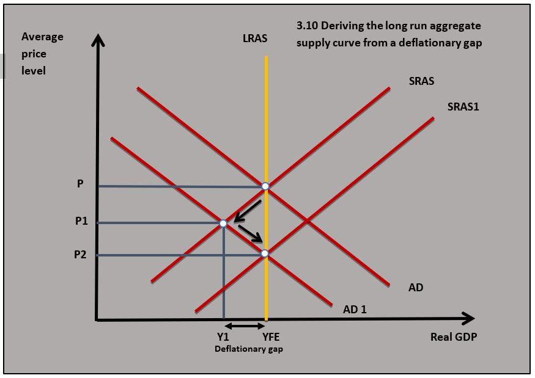
Diagram 3.10 shows how the economy adjusts back to full employment when there is a decrease in aggregate demand after initially being in short-run equilibrium at full employment:- Aggregate demand falls in the economy because, for example, there is a decrease in business and consumer confidence which causes consumption and investment to fall.
- As aggregate demand falls the short-run equilibrium level of national income falls from Y to Y1 and the average price level falls from P to P1.
- The economy now has a deflationary gap where short-run equilibrium national income is below the full employment level of national income and this is shown by the distance YFE-Y1.
- Wages, business costs and prices fall in the long run because of the deflationary conditions in the economy. For example, a rise in unemployment means there is a surplus in labour supply and wages fall.
- The fall in wages, costs and prices cause the short-run aggregate curve in the economy to increase and shift to the right from SRAS to SRAS1, causing the short-run equilibrium income to settle back at full the full employment income at YFE at the price level P2.
From an inflationary gap
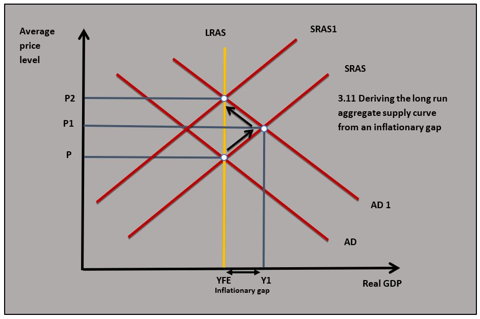
Diagram 3.11 shows how the economy adjusts back to full employment when there is an increase in aggregate demand in the economy when it has started at full employment:- Aggregate demand rises in the economy because of an increase in consumption and investment as a result of, for example, a cut in central bank interest rates
- As aggregate demand rises the short-run equilibrium level of national income rises from Y to Y1 and the average price level rises from P to P1
- The economy now has an inflationary gap where short-run equilibrium national income is above the full employment level of national income. This means unemployment has fallen below its natural rate which could be from a rate of 4 per cent to a rate of 3 per cent
- Wages, business costs and prices rise in the long run because of inflationary conditions in the economy. Low unemployment leads to a shortage of labour which drives up wages
- The rise in wages, business costs and prices cause the short-run aggregate curve in the economy to decrease and shift to the left from SRAS to SRAS1, causing the short-run equilibrium income to settle back at full the full employment income YFE at price level P2.
The financial crisis of 2008 and subsequent recession led to an unprecedented fall in real wages in the UK economy. In previous recessions, the growth in median real wages tended to slow but not actually fall. This was not the case post-2008 when workers at all salary levels saw wages fall. Many businesses tried to keep staff rather than make them redundant, but this meant offering lower wages.
Some workers were reduced to part-time status had their salaries cut in response to this. Wages fell on average by 2% a year between 2008 and 2014. The under 25s saw the biggest reduction with falls of nearly 15% over the 6 year period.
Question
Explain how an economy moves back to full employment in the long run from a deflationary gap. [10]
Answers might include:
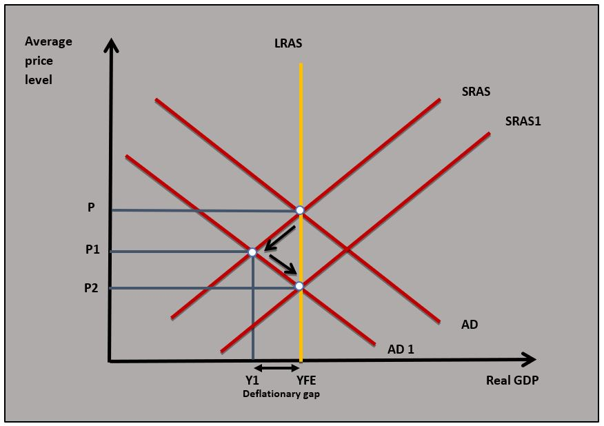
- Definitions of full employment, long run and deflationary gap.
- A diagram to show an economy moving back to full employment from a deflationary gap.
- An explanation that as AD falls from AD to AD1 in the diagram there will be a deflationary gap as equilibrium income is below full employment equilibrium. This leads to a fall in business costs as wages and prices fall, causing SRAS to shift to SRAS1 and output moves back to full employment.
Investigation
Research the current recession conditions caused by the pandemic to see whether wages and prices have fallen.
Movements of the long-run aggregate supply curve
The long-run aggr
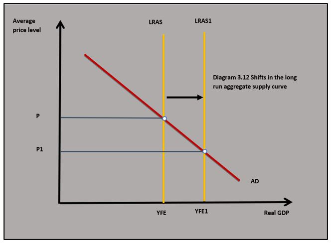
egate supply curve will shift if there is a change in the potential output of the economy. In most cases, this is a shift outwards as the potential output of the economy increases. Diagram 3.12 shows a shift in the LRAS curve to the right in response to an improvement in the productive capacity of the economy. As the LRAS shifts to the right, the real GDP of the economy rises from Y to Y1 and the average price level falls from P to P1.Long-run aggregate supply can shift outwards if there is an:
- Increase in the number of workers in the labour force because of migration.
- Improvement in the skill level of the labour force because education and training increase labour productivity.
- Increase in capital available in the economy because of new investment.
- Improvement in production technology such as the use of artificial intelligence and robot technology on production lines.
- Increase in the availability of a new natural resource such as the discovery of oil and gas.
- Improvement in the output from existing natural resources resulting from technological improvement such as the use of genetically modified crops.
The long-run aggregate supply curve can fall if the potential output of the economy goes down. This could have occurred if there was a war or a natural disaster where capital is destroyed.
Keynesian aggregate supply curve
The Keynesian a
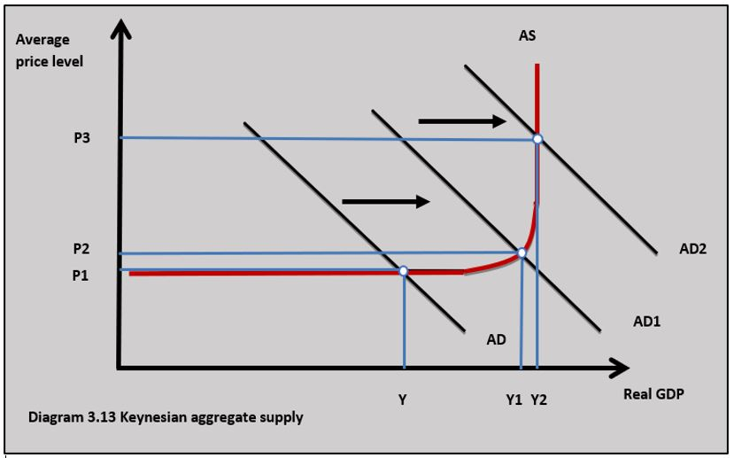
ggregate supply curve was developed by the economist, John Maynard Keynes. It is different from the Neo-classical/Monetarist view which looked at aggregate supply in separate time frames. In the Keynesian theory, there is a single aggregate supply curve and it does not distinguish between time frames. Some economists refer to the Keynesian aggregate supply curve as a long-run aggregate supply curve.Phases of the Keynesian aggregate supply curve
The Keynesian aggregate supply curve shown in diagram 3.13 can be broken down into 3 phases:
Phase 1
When output is below Y in diagram 3.13, the economy has spare capacity and output can increase and decrease without any change in the price level. Below Y the economy has a deflationary gap and is operating below the full employment level of national income. In this situation the economy would have high unemployment and capital would be under-utilised. These macroeconomic conditions are typical of a recession. When aggregate demand changes on this section of the aggregate supply curve real GDP will change but the average price level will stay the same.
Phase 2
From Y to Y1 in diagram 3.13, the economy is approaching full employment and some industries are nearing full capacity. In this section, any change in aggregate demand will lead to a change in output and the average price level. If aggregate demand rises, real GDP will increase and so will the average price level. Rising demand in the economy on this section of the Keynesian aggregate supply curve will mean some industries nearing full capacity will experience price increases and this will increase the average price level in the whole economy.
Phase 3
When the economy is at Y2 it has reached full employment. There is no spare productive capacity and the economy has very low levels of unemployment. The economic conditions in this phase of the aggregate supply curve are typical of an inflationary gap. When aggregate demand changes real output does not change but the price level does. If aggregate demand increases at Y2 there will be a significant increase in the average price level and a rise in inflation.
Difference between the Keynesian and Neo-Classical/Monetarist view
One of the key issues that arise from the Keynesian aggregate supply curve is that the economy cannot self-correct when there is a deflationary gap. This is the key difference between Keynesian and the Neo-classical/Monetarist aggregate supply model. Keynes argued that wages and costs do not fall when there is a deflationary gap because of minimum wage legislation, trade union activity and firms would prefer to cut jobs rather than wages in a recession.
Keynesian economists say wages are ‘sticky downwards’ because these pressures stop wages from falling when aggregate demand decreases in a deflationary gap situation. This means the economy cannot self-correct as it does in the Neo-classical/Monetarist model where wages and costs fall causing the short-run aggregate supply to increase and the equilibrium income to return to full employment.
Implication for policymaking
Because the economy does not self-correct in the Keynesian model, Keynesian economists argue that the government has to intervene in recessions to bring the economy back to full employment by using expansionary fiscal policy. For example, if an economy goes into recession and gets into a negative feedback cycle where rising unemployment leads to falling aggregate demand then this might cause the economy to get stuck at a level of real income significantly below full employment. In this situation, there is a strong case for government intervention using expansionary fiscal and monetary policy to bring the economy back to full employment. It can also be argued that the Monetarist view that the economy self-corrects might take such a long time (a period of years) that it would be very damaging to the economy during the period when it is correcting. Once again, there is a case for expansionary fiscal and monetary policy.
Inquiry case example - How can artificial intelligence shift aggregate supply?
The increasing use of artificial intelligence (AI) is creating more and more opportunities for businesses to become more efficient. It is quite easy to see how AI can facilitate greater efficiency in manufacturing where AI can be used in quality control, product design and machine optimisation.
But what about in a traditional service sector business like the law? There are going to be opportunities for legal firms to improve their activities by using AI. When a law firm is advising a client about a case they will consider issues such as the length of time a case might take; the strength of their case; the strength of the opposition's case; the legal precedents in the case and if the case goes to court the chances of winning. A top law firm would typically employ a team of paralegals who could examine all these issues and give the law firm the information needed to put in front of their clients. This work could now all be done using AI in a fraction of the time and probably with greater accuracy.
 Worksheet questions
Worksheet questions
Questions
Using a real-world example, evaluate the view that an improvement in technology will always lead to economic growth. [15]
Answers might include:
- Definition of economic growth.

- A diagram to show how an improvement in technology shifts LRAS to LRAS1 which leads to a rise in the real GDP.
- An explanation that an improvement in technology increases potential output as businesses in the economy can produce goods and services more efficiently. This causes aggregate supply to increase in the long run.
- An example to show how improvements in technology can lead to greater efficiency amongst legal firms who can perform their services with fewer workers and to a higher standard.
- Evaluation could include discussion of where improvements in technology might not lead to economic growth. If aggregate demand is not increasing or even falling then the supply-side improvements brought by improvements in technology might not lead to growth. This is particularly the case with the Keynesian aggregate supply curve. Improvements in technology might also lead to a rise in structural unemployment which could cause aggregate demand to fall and suppress economic growth.
Investigation
Research into an industry that has benefited from the development of artificial development.
The concept of an economy's aggregate supply is one way of looking at economic efficiency from a macroeconomic perspective. The long-run aggregate supply curve represents the level of national income where all the resources of the economy are being used efficiently. This means the land, labour, capital and enterprise of the economy are achieving the highest possible output. This can be shown by the production possibility curve when a country produces on the PPC curve. In reality, there is always going to be some inefficiency in an economy - there will always be some unemployment and some unused capital (empty shops and factories). This means economies do not produce on the LRAS curve, they are always producing somewhere below the full employment national income.
Choose an economy and think about how close it is to producing on the LRAS curve. From a macroeconomic perspective, think about how efficient your chosen economy is at a macroeconomic level.
Which of the following is not true about short run aggregate supply?
If VAT is reduced business costs will fall and the SRAS curve will increase and shift to the right.
Which of the following is the best explanation of the increase in equilibrium national income from Y to Y1 in the diagram?
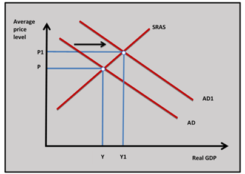
A rise in consumer confidence would increase consumption in the economy and cause AD to shift to AD1.
Which of the following is least likely to cause SRAS to shift to SRAS1?
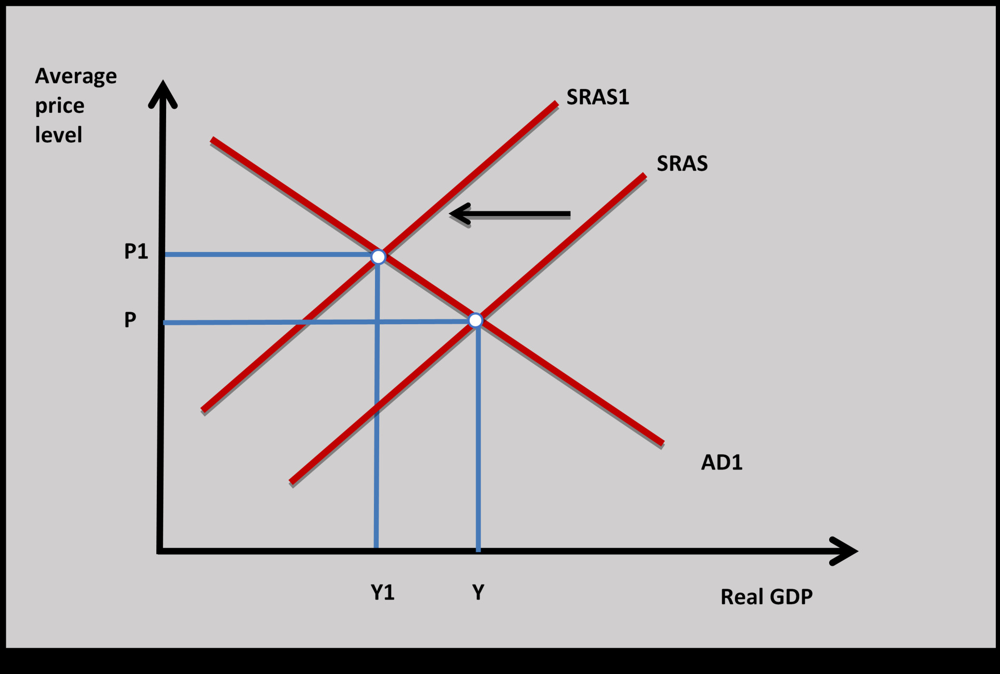
A rise in business efficiency would lead to a fall in business costs and the SRAS would shift to the right.
Which of the following is true about the long run aggregate supply curve (LRAS)?
As technology improves in an economy more can be produced from available resources and the LRAS increases.
Which of the following is not true about the diagram that shows the LRAS of country A?
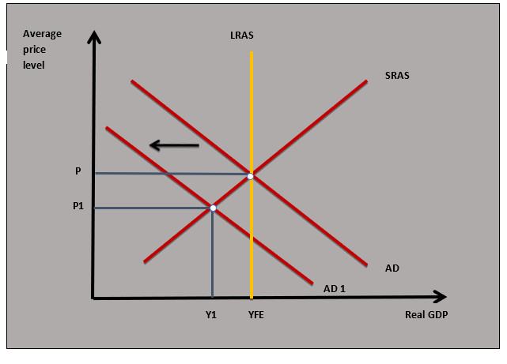
When the output falls from YFE to Y1 in the diagram country A will be operating inside the PPC.
Why does aggregate supply on the Keynesian aggregate supply curve become perfectly elastic when the economy is operating significantly below full employment?
Wages are sticky downwards in the Keynesian model of aggregate supply.
Which of the following is least likely to be true when aggregate demand increases when the Keynesian aggregate supply curve is used?
When output is below full employment and there is a deflationary gap an increase in AD will not increase the average price level.
The position of the long run aggregate supply curve for Country X depends upon:
The amount and quality of capital and labour determines the potential output of the economy.
Which of the following is least likely to be true on this Monetarist LRAS diagram?
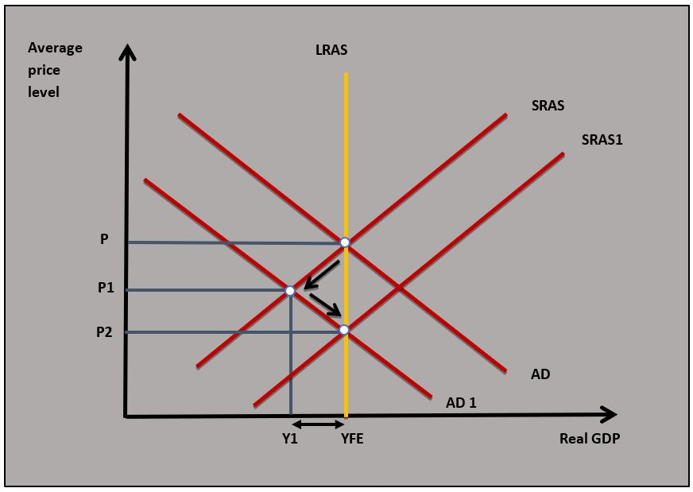
The economy will return to full employment incomes as wages and prices fall.
Which of the following is most likely to be true if there is a increase in the potential output of an economy?
An increase in potential output increases the LRAS.
 Twitter
Twitter
 Facebook
Facebook
 LinkedIn
LinkedIn